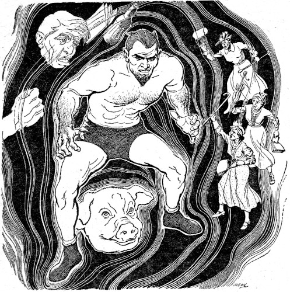

[Transcriber's Note: This etext was produced from
Startling Stories Summer 1955.
Extensive research did not uncover any evidence that
the U.S. copyright on this publication was renewed.]

The way it started, Leo Stern decided I should make a publicity appearance at this soiree up in Bel Air. I wasn't happy about the deal. These Bel Air soirees are usually loaded with earnest intellectuals, and if there's one thing that upsets me it's mingling with earnest intellectuals. But Leo is my manager. What he decides I should do, I do.
"Being seen at this brain brawl will be smart box office, Freddy," Leo told me. "You can use a little high-brow publicity."
I could have used a little premonition and second sight too. It would have kept me from getting mixed up with Panda, the beautiful Ph.D. It would have kept me from taking that fatal fall to Dr. Stanley MacCluett's synthetic symbiotic wave. I could have gone on for the rest of my life being the same old obnoxious Freddy Booten.
That's my legal name—Freddy Booten. Professionally I am known as Don Diablo. This is because I am supposed to look very sinister. I have basilisk black eyes, a satanic-type Vandyke and I am all over with muscle. I am what is very loosely termed a wrestler.
Very, very loosely. On any given day you can pick up at least a hundred heavies around and about the country who can easily whip me no hands. The reason they consistently refrain from doing this is merely because promoters dearly love to amass money. Time and time again cash customers will come back to the arena in the hopes of seeing some clean-cut American kid twist me up like a cruller.
This never happens, of course. What happens is I leave the clean-cut American kid writhing in frightful agony on the canvas. Sneering horribly, a red nylon robe tossed rakishly around my shoulders, I make my victory strut up the aisle. While I strut and sneer, kindly old ladies try to beat me to death with their canes. I am indeed a very obnoxious character.
Being obnoxious never bothered me. It was, I always figured, a fast way to stack a buck on top of a buck. In a year or two, if some kindly old lady didn't maim me first, I'd have enough to retire to my pig farm back in Fishhook, Illinois. I'm proud of that pig farm. People may detest me, but I get along fine with pigs. We're real compatible.
The party Leo picked out for me to attend that night was being held in one of those mansions which come equipped with their own private mountain. It was jammed clear to the upstairs maid with artists, swamis and people, and I was prepared to have a very dull night. What I wasn't prepared for was to meet Panda.
At the time, I didn't know that's who she was. All I knew was suddenly here was this spectacular girl with the glossy white streak in her satin black hair standing in front of me. She had an orange juice and vodka in one hand and an expression of mild revulsion on her beautiful face.
"I can tell by that silly beard you're a male," she snarled. "But a male what?"
Then she reached up and dumped the orange juice and vodka over me.
It wasn't anything to get sore about. Lots of women throw drinks at me. I'm used to it by now. When it happens, I merely draw myself up to my full six-feet-four and drip disdainfully down on the drink-tosser. Then I stalk away. If there's a photographer around, I pause and lash my beard a couple of times for the camera. It is, Leo says, very smart box office.
It wasn't anything to get sore about, but that's what I did. Something sputtered in my head and I broke out in flame. Without even bothering to clear it with my conscience I lifted a foot and planted it on the girl's instep. Not hard enough to break any bones, you understand; just enough pressure to cause her to shriek in mortal anguish.
That shriek got a rousing reaction. Those earnest intellectuals suddenly came boiling toward me in a red wave of wrath. There was a scrawny blonde, built like the ruins of Pompeii, in the lead.
"Let me have him, girls!" I heard that scrawny blonde whinny. "Ten years ago I took some jujutsu lessons to help protect me from men. Now I want to see if I wasted my money."
I guess she never did find out if she wasted her money. Before she could get her girlish talons into me some lily-livered flunky pulled the main light switch.
In the thick darkness I barreled my way through the screaming mob. I didn't stop until I climbed into my car. Somebody plopped down into the seat beside me just as I hit the starter.
"Better roll it out of here fast!" a girl's voice yipped excitedly in my ear. "There's a berserk gorilla loose in there!"
I wanted to explain that the berserk gorilla wasn't loose in there any more. I wanted to say, Look, sis, that berserk gorilla is me. But, judging from the way the riot was building up, I just didn't have the time to spare. I rolled out of there fast.
It wasn't until we swung into the lighted boulevard that I realized I had picked up the furious little female with the striped hair.
She recognized me at the same instant. "Yipes!" she squalled. "The bearded Gargantua!" She drew back her foot and aimed a quick kick at my shin. Her open-toed sandal whizzed by my leg and thudded into the dashboard. She grabbed her foot and squalled some more. "Crumpled it up like a balsa kite!" she screeched. "Bones sticking out all over! Stop this chartreuse tumbrel! Let me out of here!"
I stopped the car. The mood she was in I felt she just wasn't safe to have around.
"I don't want to rush you, sis," I said, "but there'll probably be a broom coming along any minute. Maybe if you crawl out fast you can grab a ride home."
She counted up to ten, cooling off faster than a strip-teaser in a drafty igloo.
"This is ridiculous," she sputtered. "Why is it I keep blowing my top like this?"
I was beginning to feel sorry for her. After all, it wasn't her fault I was so obnoxious. "Don't let it throw you," I sighed. "You're merely acting normal. Everybody hates me."
She stopped massaging her foot and turned to stare incredulously at me. "Everybody?" she gasped.
I nodded. "Including kindly old ladies and small dogs," I said. I mean, I wasn't boasting or anything. Just trying to paint a clear picture for her.
She thought it over carefully. I could see an idea begin to form in her big brown eyes.
"This is remarkable," she murmured. "This is really remarkable. Mind driving around a bit?"
While I drove around she told me about herself. Her name, she said, was Marsha Carson, though her friends all called her Panda. She worked for the Keevan Research Foundation. Her boss was Dr. Stanley MacCluett, the famous bio-electronicist, who was presently doing some important work on waveform mutuality.
"I have a very good reason for filling you in on all this background material," she went on to explain. "Because of the type of biological electronic research we are carrying on at Keevan I feel I am in an excellent position to offer a logical explanation as to why everybody finds you so detestable."
I told her there wasn't any mystery about that. "I am detestable," I said.
She nodded somberly. "You're an abominable cluck, and that's a mink-lined fact," she agreed. "But this is in no way your fault. You are simply an unfortunate victim of an extreme variation from the electric norm. You have what we bio-electronicists call a rogue symbiotic waveform."
She could be right. Big-electronics was a little out of my line. I didn't feel I knew enough about the subject to argue.
"What throws me," I said, "is why I should reciprocate your revulsion. I mean, ordinarily I am a sort of good-natured slob. I don't often get mad—not even at kindly old ladies."
It seemed Panda also had a theory about that. "This antagonism undoubtedly stems from the fact that we are at opposite ends of the symbiotic scale," she said. "We are a hundred per cent incompatible."
We drove around for a couple of hours before I dropped her off at her apartment in Santa Monica. When I finally left, I found I was committed to escorting her down to Long Beach, where I was wrestling that next night. I wanted that date the way a guy on his way to the electric chair wants to sit down.
The Long Beach match turned out to be one of my best performances. The sight of Panda sitting there in the front row, her face contorted in a livid mask of hatred, was positively inspiring. When I finally made my victor's march up the aisle, the place was a howling bedlam.
Those kindly old ladies were leaping from seat to seat like spindle-legged Tarzans.
Leo was all molars by the time we got back down to the dressing room. "Freddy," he chortled, "tonight you were great. I hear the TV switchboard is jammed with people calling up to swear they will slay you on sight. But slow and painful!"
I told Leo I was happy to learn I was such a success.
"You have never been nastier," he assured me expansively. "It must be that dame with the striped hair who was sitting at ringside. She had a high-tone way of screaming for your blood that was very smart box office. Maybe I should step out and give her a couple of free ducats."
I told Leo he needn't bother. "I don't think Panda wants any free ducats," I said.
He looked surprised. "You mean you are acquainted with this piebald babe, Freddy?"
"She came with me," I admitted glumly. "She's a Ph.D. and she lives in Santa Monica."
"Freddy," he murmured, shaking his head in honest admiration, "sometimes I think you are a much smarter boy than I always figured. What an act your girl put on tonight!"
"She wasn't acting, Leo," I said. "She really hates me."
"Freddy," he groaned, still shaking his head, "sometimes I think maybe you are a much stupider boy than I always figured. You drive this girl up Route One-o-one tonight and tomorrow your body will no doubt wash up on the rocks at Redondo."
I wasn't so sure he wasn't right. I wasn't so sure Panda wasn't prowling around the parking area now, a fire ax in each hand.
As it turned out she was sitting quietly in my car. "You unspeakable beast!" she greeted me when I climbed in. It was the most restrained statement she had made all evening.
On our way up the coast we stopped at a seafood restaurant. In some of these roadside joints you can sometimes pick up a lobster loaded with ptomaine. But either Panda was immune to ptomaine, or else I was just unlucky that night.
It was while we were in the restaurant that Panda made the request that was to ruin my career. "Freddy," she said, squinting thoughtfully at me, "I wonder if you would do me a favor?"
I hesitated. I wanted to be polite, but I wasn't going to cut my throat with any knife. "Favor?" I repeated cautiously.
She nodded. "I wonder if you would stop in at the Keevan Foundation and let Dr. MacCluett type your symbiotic waveform. We may be able to get a waveshape picture of the enmity factor in its pure form. Such a study might lead to the unlocking of the riddle of the antipathy some ethnic groups instinctively hold for others. This might easily turn out to be the dawn of a new era."
Well, as long as she put it that way, I didn't see how I could refuse. I figure if there's one thing this world can use, it's the dawn of a new era.
And so that is how I happened to be at the Keevan Research Foundation early that next evening.
The famous Dr. Stanley MacCluett came as a complete surprise to me. I was expecting a stoop-shouldered old gentleman in bifocals. But he turned out to be about my age and almost as big. He had a granite jaw and brilliant blue eyes that lit up like a pinball machine whenever he glanced at Panda. He seemed to glance at Panda a lot.
The good doctor opened up the proceedings that evening by giving me a rapid-fire briefing on mutuality. He went all the way back to the planarian worms and worked his way up to the primates. He explained that it was his theory that the pattern of all social behavior was determined by a complicated meshing of symbiotic waves. According to him, these waves held the key to the urge of kind to mate with kind; they were the basis of all physical attraction and all physical antipathy. It was very scientific. I never understood a word.
When he finished the briefing, he led me into a small lab that looked like a cross between the cockpit of a B-39 and an operating room for midgets. There was a big contour chair in the center of the lab.
"Sit in the chair, Freddy," Panda ordered.
I sat in the chair, but I was beginning to get worried.
"Look," I said, narrowing my eyes and steeling my voice, "just in case something goes wrong, I'd like to leave a few words for posterity. I'd like to state that I am proud to—"
"Stop blubbering, Freddy," Panda snapped, giving me a look that would have carved a duck. "This isn't going to hurt."
She was right, Dr. MacCluett said. All they were going to do was use a radio electroencephalograph on me. That radio electroencephalograph was just a series of modified FM transmitters which they were going to set up around me. Those transmitters would pick up my wave patterns and transmit them over to that receiver in the corner. That receiver would flash the pattern to that oscilloscope beside it. I would be as safe as a baby in its mother's arms. Safer even. Those FM transmitters weren't going to drop hot cigarette ashes on me. They weren't going to drip gin in my eyes.
"Just lean back and relax," Dr. MacCluett finished.
I leaned back and tried to relax. Those FM transmitters, I had an idea, were going to have their job cut out for them. That oscilloscope was probably going to turn out to be the blankest oscilloscope in the country.
The way it is, I'm more familiar with appearing on TV than on radio. I felt lost without a camera pointing at me.
"You want me to suffer a little?" I asked uncertainly. "You want me to lash my beard a few times?"
Dr. MacCluett gave me an unfriendly glance.
For a while I sat there and watched them out of the corners of my eyes. Then I began to get restless again.
"You reading me all right, Dr. MacCluett?" I called.
He didn't bother to answer. Just went on staring at that oscilloscope. "This is remarkable," I heard him mutter. "We must make a photographic record of this. Thus must primitive man's waveform have appeared when he was forced to battle the hairy mammoth."
I decided I ought to put the doctor straight on that point. I didn't want to ruin the start of a new era with any misconceptions.
"Dr. MacCluett, I got to tell you something," I said. "I never battled a hairy mammoth in all my life. Couple of years ago I wrestled a bear in a carnival. But I never laid a finger on a hairy mammoth in all my life."
He didn't bother to comment on that either. He just went on staring and muttering.
I was beginning to build up a back pressure of curiosity. Finally it got to be too much for me. "You mind if I step over and take a peek?" I called out. I mean, those were my brain waves they were looking at. I wanted to be sure they were cleaned up and cleared for transmission.
Panda spun around. "Freddy, don't you dare move!" she yipped. "How can you possibly step over and look at your own brain waves?"
When I thought it over, it didn't seem logical. I guess it would be like climbing a ladder to see the top of your head. I decided it wasn't anything to start a war about.
I don't know what sort of rating I would have picked up on that first show, but I must have impressed Dr. MacCluett. Anyway, he invited me to come back again that next day.
During the following weeks I suppose I must have appeared at the Foundation at least a dozen times. I was even beginning to draw a small studio audience. Scientists from all over the country came around to stare thoughtfully at me and to ask me probing questions. I don't know, maybe they figured I must have sneaked down from Mars. Any day now I expected the FBI to drop in and ask me where I'd hid my saucer.
On the nights I wasn't wrestling I got in the habit of going places with Panda. She said she wanted to record the reactions of the unwary human horde to my nauseating personality.
As long as I didn't have anything else to do, I didn't mind. But I could tell Dr. MacCluett was beginning to resent these field trips. Couple of times I caught him giving me a sort of measuring stare. It reminded me of the way that bear in the carnival used to look at me—like he wished he could get his muzzle off.
I mentioned this to Panda. "That Dr. MacCluett doesn't like my going out with you so often," I told her. "I'm making him jealous."
She almost broke herself up with girlish glee over that. "Oh, brother!" she shrieked. "How could anybody possibly get jealous of you, Freddy?"
She had a good point. It didn't sound reasonable. "All the same," I insisted, "that Dr. MacCluett is getting jealous."
She told me to stop worrying about it. "I'll handle the good doctor," she said. It was like a kid with a toy blaster telling you he'd handle that armored column.
The very next day the good doctor lowered the boom on me. Panda was lecturing at some woman's club out in Pomona when it happened. I hadn't planned on appearing at the Foundation that afternoon, but Dr. MacCluett called up and asked me if I would stop in. He sounded so genial I decided Panda must have informed him he now loved me like a brother.
For once there were no visiting neurologists waiting in the lab. In fact, there was nobody there but Dr. MacCluett.
"Freddy," he said, opening hostilities with a big false smile, "I have one final experiment I would like to perform on you. I've been holding it back to the last because it may be a bit rough."
I asked him how rough did he mean. I said, "I'm wrestling down at the pier tonight, and I can't go on that card with a broken leg. I go on that card with a broken leg and those kindly old ladies will part my head right down the middle."
"This experiment will involve no hazard to limb," he assured me, his smile turning somewhat bleak. "And it may prove to be of great scientific importance."
Well, I thought, as long as it was for Science, I ought to do it. After all, Science has done a lot for me. If it wasn't for Science I'd probably be crouched in a cold cave, gnawing on a raw buffalo. I wanted Science to know I was grateful.
Since my last visit to the Foundation, I noticed the doctor had added another piece of equipment. It was set up beside the contour chair. It looked like one of those analyzers they use in garages to check motor performance. There was a long metal barrel sticking out from it. That barrel pointed directly at my head when I sat down in the chair.
"Dr. MacCluett," I said, "if you've got this gun loaded, maybe you better not aim it at my head. I am liable to dull that bullet."
"This instrument is not a gun," he grunted, making a micrometer adjustment. He sighted down the barrel and added, "It's a symbiotic waveshape modifier."
The doctor hadn't been kidding when he said that experiment was going to be rough. One moment I was sitting there, big-wheeling civilization on to the dawn of a new era. The next moment a squadron of jet bombers started roaring through my skull.
Dr. MacCluett was waving a bottle of spirits of ammonia under my nose when I finally opened my eyes.
"You all right, Freddy?" he asked in a quavering voice.
I staggered to my feet. I had a headache that would have dropped an elephant in its tracks. A team of rough maulers couldn't have done a better job on me with claw holds.
"I'm fine," I groaned, matching him quaver for quaver. "The only reason I look this way is merely because I am dying."
By dint of much heaving and tugging he managed to haul me out to my car and boost me into it.
He appeared as nervous as a neophyte murderer trying to get his first corpse under cover.
"Drive carefully, Freddy," he said, stepping back. He pulled out a white handkerchief and waved it gently. "Look both ways when you cross Wilshire. Please watch out for dangerous pedestrians."
Leo was waiting for me in my dressing room that evening. He gave me an anxious scrutiny. "You feel all right, Freddy?" he inquired solicitously. "You want I should get you an aspirin? You want I should hold a cold cloth on your head?"
I had to look twice to be sure this was Leo talking to me. Any other time I could be lying flat on my face. I could be bleeding out of all my arteries and Leo would probably try to boot me to my feet. "Freddy," he would probably say, "what are you, a hypochondriac?" But here he was, clucking over me like a hen over a newborn egg.
The rest of the evening was strictly a nightmare out of 3-D by Technicolor. I walked down the aisle and there wasn't a single, solitary boo in the place. So help me! There was only this soft, pulsing sigh. Like a steel guitar stuck on Blue Hawaii.
The pulsing sigh faded to a breathless hush when I climbed through the ropes. Then, suddenly, this kid redhead in shorts and store curves leaped to her feet.
"Oh, you great big beautiful doll, you!" she yipped, waving her popcorn at me.
From then on things got real pitiful. I was supposed to be wrestling a guy named Arnie Kapowsky. Arnie never wrestled any way but hero-style, and the crowd broke his heart that night.
What happened was each time I started to massage Arnie's eyeballs with my thumbs, the crowd whooped with delight. And each time Arnie worked into a hold such as would be perfectly permissible on any dance floor in the country, those kindly old ladies scrambled through the ropes and whanged him with their canes.
Arnie finally terminated this loathsome exhibition by lying down and covering his head with his arms. Either that crowd had to cheer fair or Arnie wasn't going to play.
I don't want to linger any longer on that match. It is something better forgotten by one and all. It is a black and infamous blot, buried now in the pages of wrestling history. Let us leave it there.
Leo waited until we were back in the dressing room before blowing his top. "Freddy," he screeched, "what disgusting thing have you done? Have you rescued some blonde who was going down in the briny deep for the ninth time?"
I told Leo no. "I try to save a blonde from drowning," I said, "and she'll scream high-C for a shark to come and protect her."
"Then have you pulled some tiny toddler out from under the wheels of a careening and malignant truck?" Leo screeched.
I told Leo no. "I try to pull some kid out from under a truck," I said, "and he's liable to bite off my right arm all the way up to my left ear."
"Then how come that crowd was cheering on your side?" Leo howled. "Why were they drooling with affection for you?"
I couldn't explain it. I was completely confused.
If I'd have had a bit more time to think it over I might have been able to figure it out. But it wasn't until this cop brought Panda down to my dressing room that I found out just what had happened.
"Freddy," this cop said, sticking his head in, "there's a young babe with striped hair out here. This young babe is a very excited young babe. She says she has to see you."
Panda pushed her way in before I could answer. Her face was almost as white as that distinctive streak in her hair.
"Freddy," she squealed, "are you all right?"
I was getting fed up with that question. It just wasn't normal for people to keep asking it. "Of course I'm all right," I snapped.
"But, Freddy," she wailed, "he might have killed you!"
I had to laugh. "You mean Arnie?" I snickered. "Why Arnie wouldn't hurt a fly. Besides, it's against the rules for clean-cut American kids to wrestle rough."
"I mean Dr. MacCluett," she squalled. "That was a very dangerous operation he performed on you. He might have done an irreparable injury to your poor little brain."
In all my life I had never heard such a silly statement.
"Panda, I got to tell you something," I sighed. "Even that bear in that carnival couldn't damage my brain. He beat both paws to a pulp on my head, and then said to hell with it. We used to call that bear 'Old Limpy.'"
She didn't appear to be paying an awful lot of attention to what I was saying. "Dr. MacCluett confessed everything," she went on in a tremulous voice. "He really was jealous of you. So he decided to modify your waveform. He used an ultrasonic beam to perform a sort of transorbital lobotomy and make you lovable."
It didn't seem like a strictly sensible thing for a smart man like Dr. MacCluett to do. Still, I guess having a high I.Q. doesn't necessarily guarantee a man against being a complete jerk in certain things.
"Why, that poor stupid genius!" I chuckled.
Leo let out a strangled roar. "Freddy," he bellowed, "what is this pinto Ph.D. saying? Is she saying you have let some wacky scientist tamper with your putrid personality?"
That wacky scientist had tampered all right. There wasn't much point in denying it, so I just raised my eyebrows like a furry pair of humpbacked Japanese bridges.
Panda drew a long shuddering breath and began to close in on me. "When Dr. MacCluett made that wave shift," she murmured, "he overlooked the fact that there is but a very thin line separating love and hate. He—" She reached up suddenly and slipped her arms around my neck. "Oh-h-h, Fred—dy!" she cooed.
It was a pleasant sensation. I mean, it was a sort of change from having drinks sloshed over you. For a moment there I began to think science was wonderful. I still hadn't had time to realize my career had just gone down in flames. I still didn't know what an appalling experience being a lovable character was going to turn out to be.
I found out. Oh, brother, how I found out!
Twice during the next week Leo arranged matches for me. And twice those kindly old ladies surged through the ropes to protect me.
For awhile I kept hoping my new personality would wear off like a hangover. But it kept getting stronger and stronger. If I ran a stop light, some cop would roar up and apologize for that light's being red. If I stepped into a bar to order a drink, the bartender would beat his forehead in anguish. "Freddy!" he'd scream. "You got to take better care of your stomach! Don't drink that slop I beg you!"
Even my pigs were affected by my new waveform. The time I flew back to Illinois to check on my farm, those pigs chased me clear out of the county. Nipped at my heels and bayed like beagles, those pigs did.
I wasn't too upset about it. I planned on selling the farm anyway. Now that I'm in the diplomatic service, I won't have much time for pig farming. Being the ambassador to Russia is a big job, and I'm worried about it. I don't know whether I'll like having all those Cossacks call me Uncle Freddy. I don't know what I'll do with the Kremlin when they give it to me.